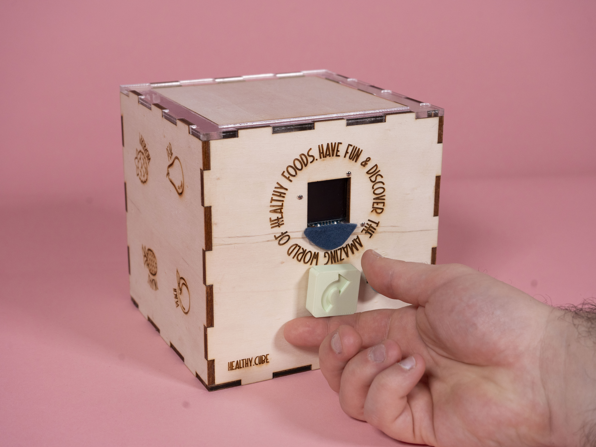
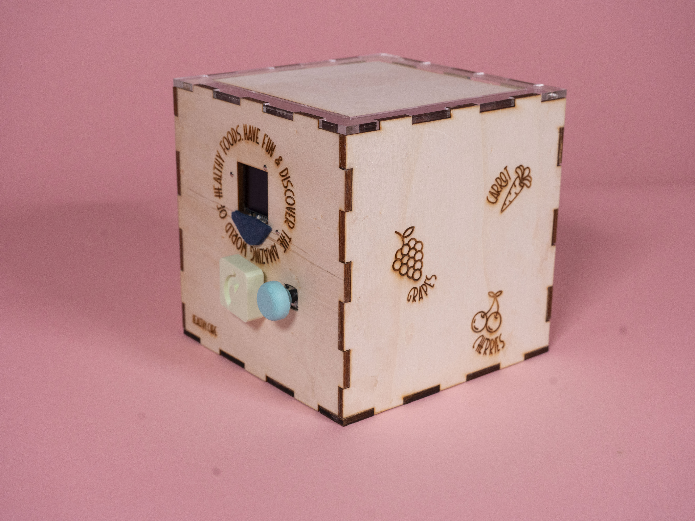
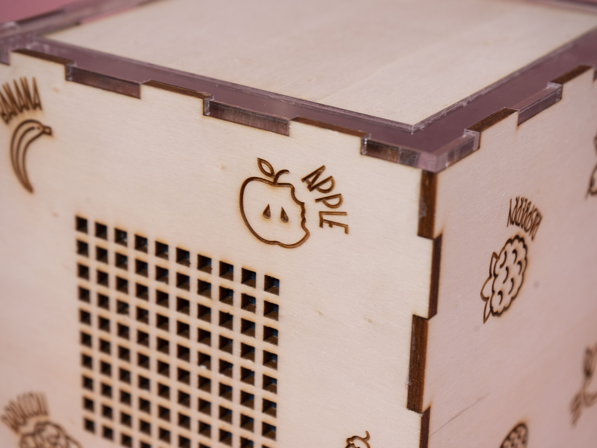

Healthy
Cube
Un cubo interattivo intelligente progettato per coinvolgere i bambini in un'esperienza di apprendimento ludica sul riconoscimento degli alimenti. Il cubo offre indizi audio e visivi, invitando il bambino a indovinare un determinato alimento. Gli indizi possono descrivere caratteristiche quali colore, forma e usi culinari tipici. Dopo aver ascoltato gli indizi, il bambino interagisce con un display OLED che mostra diverse icone di alimenti. Utilizzando una manopola rotante, il bambino seleziona l'icona corrispondente alla sua ipotesi, sviluppando capacità cognitive quali il riconoscimento di schemi e il processo decisionale in un ambiente divertente ed educativo.





Concept
Il cubo interattivo è un dispositivo educativo innovativo progettato per coinvolgere i bambini in un'esperienza di apprendimento divertente e multisensoriale, promuovendo al contempo abitudini alimentari sane. Combinando la narrazione uditiva e visiva con l'interazione pratica, il cubo aiuta i bambini a imparare a riconoscere e apprezzare diversi tipi di alimenti, favorendo lo sviluppo di abilità cognitive quali il riconoscimento di schemi, il ragionamento logico e il processo decisionale.
Il gioco è semplice ma stimolante: il cubo fornisce una serie di indizi audio che descrivono un alimento specifico, evidenziandone caratteristiche quali il colore, la forma o gli usi culinari tipici. Dopo aver ascoltato gli indizi, il bambino guarda uno schermo OLED che mostra una selezione di icone di alimenti e, utilizzando una manopola rotante, seleziona l'icona corrispondente. Le risposte corrette vengono premiate con un feedback visivo e audio positivo, che rafforza l'apprendimento.
Un aspetto unico del cubo è la sua attenzione verso un'alimentazione sana. Gli indizi e le opzioni alimentari sono accuratamente selezionati per introdurre i bambini a cibi genuini e nutrienti, aiutandoli a sviluppare una comprensione precoce dei benefici di una dieta equilibrata.